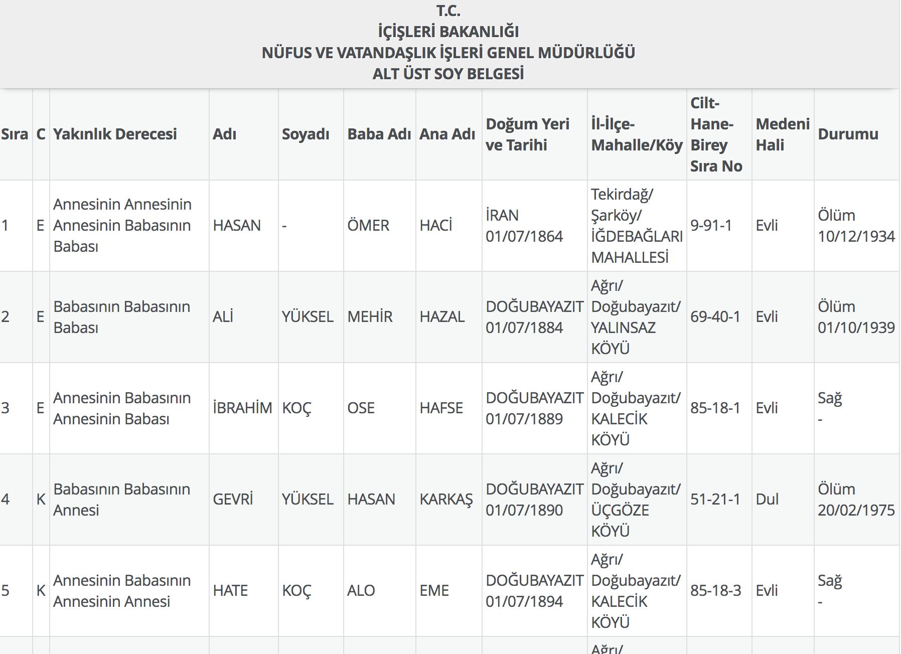
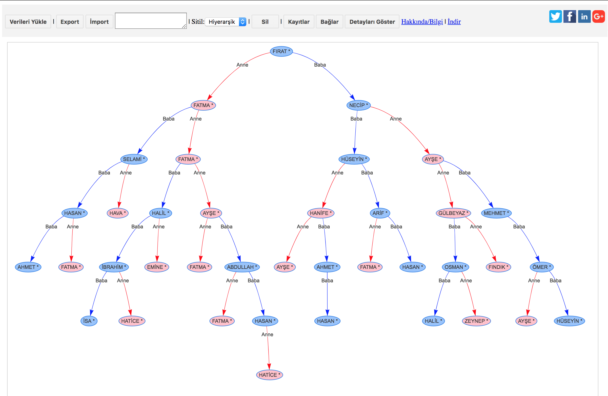

Soyağacı Görselleştirme
Nedir
E-devlet üzerinden sağlanan soyağacı bilgilerini, şemalar halinde görselleştirmeyi sağlayarak daha kolay, okunaklı ve eğlenceli bir şekilde sunar.
Şemalar üzerinde yeni üyeler ve bağlantılar ekleyip kaldırabilirsiniz
Verileri export ile çıktı alarak daha sonra tekrar kullanmak için kaydedebilirsiniz.
Export ile kaydettiğiniz verileri tekrar sisteme import ile yükleyebilir, görütüleme ve düzenlemeye kaldığınız yerden devam edebilirsiniz.
E-devlet sorgulama sonucunda değişiklik yaparsa bu değişikliklere göre düzenlenme yapılması gerekebilir.
Nasıl Kullanılır
Sorgulama sonucu soyağacı verilerini sisteme aktarıp üzerinde değişiklikler yapıp görüntüleyebilirsiniz.
3 şekilde sorgulama sayfasındaki verileri aktarabilirsiniz.
- Soyağacı tablosunu kopyalayarak
- E-devlet sorgulama sayfasını kaydederek
- E-devlet sorgulama sayfasındaki tabloyu kopyalayıp excel' e kaydederek
1) Soyağacı Tablosunu Kopyalayarak
Adım 1: E-devlet soyağacı sorgulama sayfasındaki tabloyu başından aşağıya seçip kopyalayın.
Adım 2: Kopyaladığınız içeriği "Verileri Yükle" bölümünden "Tabloyu Yapıştır" alanından ekleyebilirsiniz.
Yapıştırdıktan sonra veriler üzerinde istediğiniz değişikliği yapabilirsiniz.
2) E-devlet Sorgulama Sayfasını Kaydetmek
Adım 1: E-devlet soyağacı sorgulama sayfasındayken sayfayı kaydediniz.
Adım 2: Kaydettiğiniz .html uzantılı dosyayı; programda "Verileri Yükle" bölümünde yükleyerek "Aktar" tuşuna basınız
Kaydetme Yöntemleri
- Tarayıcının Dosya menüsünden: Sayfayı Farklı Kaydet
- Sayfadayken fare ile sağ tık: Sayfayı Farklı Kaydet
- Windows işletim sistemi kullananlar için klavye kısa yol: CTRL + S
- Mac işletim sistemi kullananlar için klavye kısa yol: CMD + S
3) E-devlet Sorgulama Sayfasındaki Tabloyu Excel İle Aktararak
E-devlet sorgulama sayfasındaki tabloyu başından sonuna kadar kopyalarak Excel programına yapıştırıp kaydediniz.
Kaydedilen excel dosyasını; programda "Verileri Yükle" bölümünde yükleyerek "Aktar" tuşuna basınız
Güvenlik
- Program sadece kendi cihazınız üzerinden çalışır
- Kendi aygıtınız üzerinden client side teknolojiler kullanılarak geliştirilmiştir.
- Açık kaynak olup kodlara Github, Bitbucket hesaplarından ulaşılabilir, geliştirme ve katkıda bulunabilirsiniz
- Hiçbir şekilde veriler herhangi bir yere gönderilmez veya depolanmaz.
- Sunucular, veritabanı, veri gönderimi yoktur
- İnternet bağlantısına gerek duymaz.
Uyarı: E-devlet Sorgulama sonucunu hiç bir şekilde bilgisayarınıza saklamayınız. İndiridiğiniz excel veya html dosyayı işleminiz bitince silmeyi unutmayınız.
Nasıl Başlatılır
İster dosyaları kendi cihazınıza indirirek hiçbir kurulum gerekmeden ister online şekilde hemen kullanabilirsiniz.
İndirdiğiniz dosyalardan index.html isimli dosyayı çift tıklayarak tarayıcı da açıp kullanabilirsiniz.
Online Kullanım
İndirmeden yine tarayıcı üzerinden hemen denemek için: tıkla
İndirme
Kendi aygıtınıza indirmek için tıklayın
İndirdiğiniz zip dosyasını açarak, index.html dosyasını çift tıklayarak tarayıcı üzerinden açabilirsiniz.
Program Seçenekleri
Verileri Yükle: Excel veya html aktarılacak dosyayı yüklemeyi sağlar
Export: Çalışma alanını çıktı alarak daha sonra tekrar kullanmak için kaydedebilirsiniz. Metin kutusuna basılan verileri not defterine kaydedebilirsiniz.
İmport:Export ile kaydettiğiniz verileri tekrar sisteme import ile yükleyebilir, görütüleme ve düzenlemeye kaldığınız yerden devam edebilirsiniz.
Stil:Grafik türü. Hiyerarşik veya serbest olarak görüntüleyebilirsiniz.
Sil:Seçili elemanı silmeyi sağlar.
Kayıtlar:Yeni veri - kayıtlar eklenebilir.
Bağlar:Yeni bağ-ilişki eklenebilir.
Bilgileri Göster:Seçilen grafik hakkında detaylı bilgiler gösterilir.
İndir:Dosyaları kendi cihazınıza indirerek çalıştırabilirsiniz.
Görüntüler
E-devlet sorgulama sonucu örnek ekran görüntüsü
Programdan örnek ekran görünütsü
Geliştirme ve Katkı
Basit bir şekilde soyağacı verilerini görselleştirip kolay ve eğlenceli şekilde inceleme imkanı sağlamak için geliştirilmiştir.
Katkıda bulunarak daha da eğlenceli hale getirmek için iletişime geçebiliriz.
Soyağacı - Github | Soyağacı - Bitbucketİletişim
Tahsin Yüksel
Site: http://tahsinyuksel.com/
E-mail:info[@]tahsinyuksel.com
linkedin |
Twitter |
Bitbucket |
Github